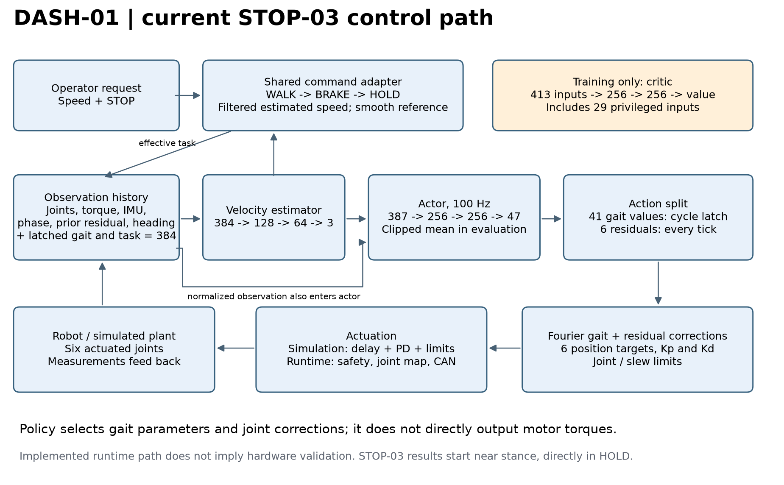
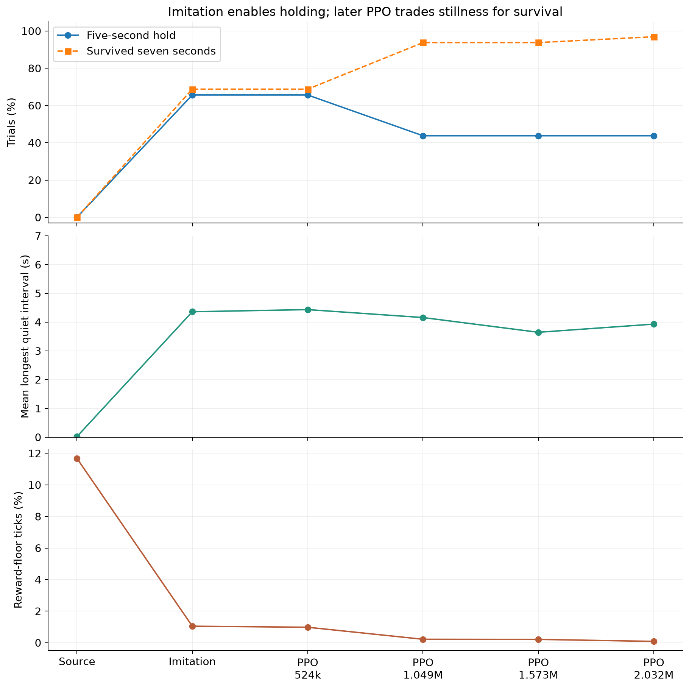
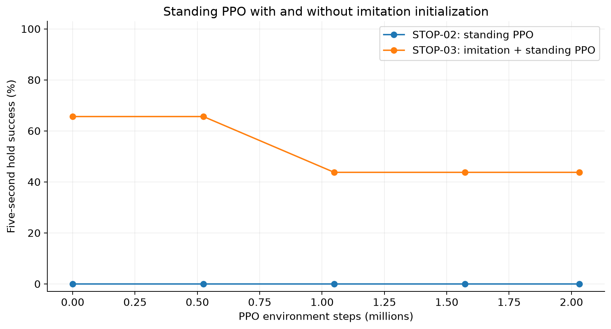
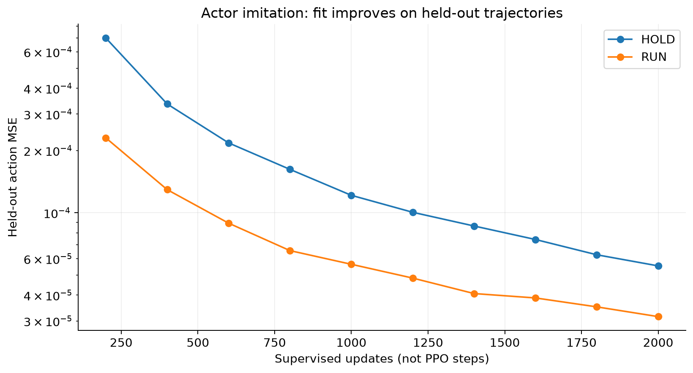
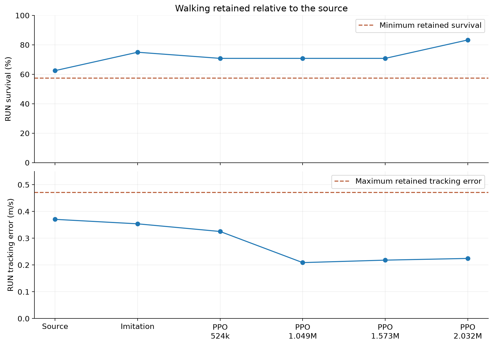
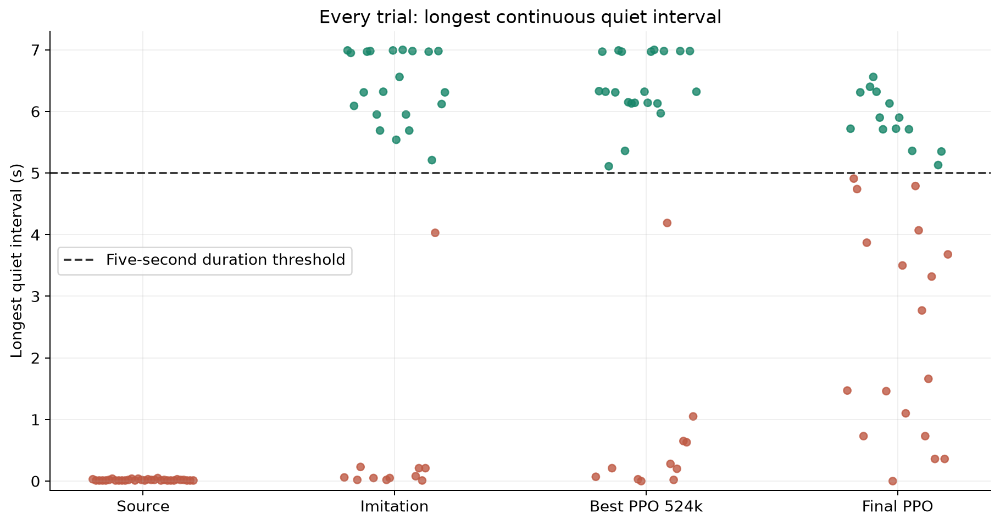
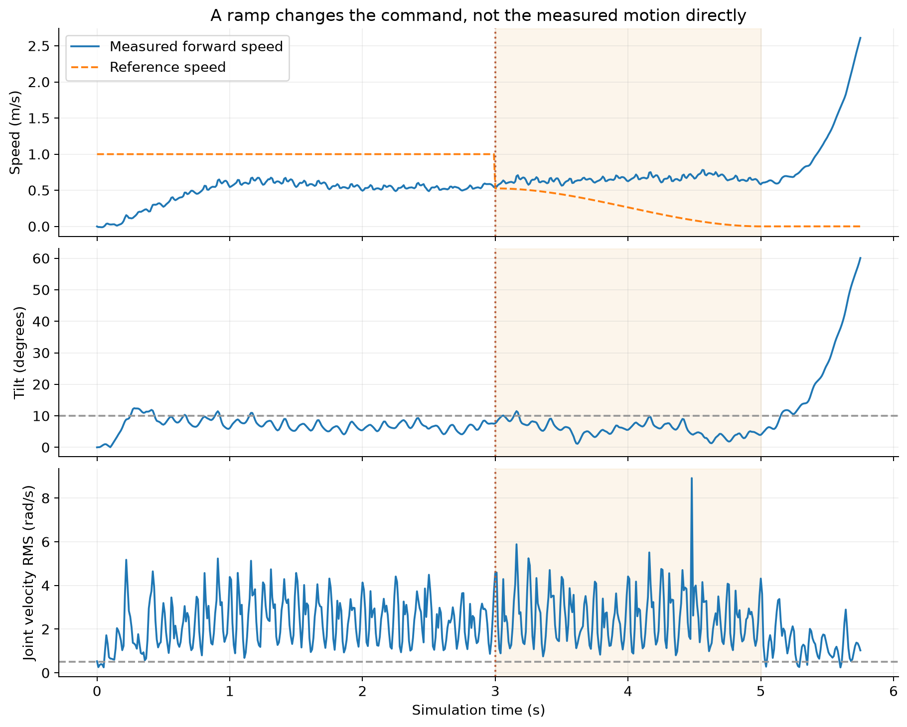

DASH-01 / RESEARCH RECORD / 12 OCTOBER 2026
Teaching a walking robot to stop
Flat-feet symmetry v1: completed 200M steps
12h54m training. Best checkpoint: 28/28 full-duration trials, 0.049 m/s tracking error. Videos and learning/contact/slip graphs. Slip remains a concern; inspect the motion.
Latest test: Nathann's original policy on CAD-v2
The original policy survives three 20-second trials on its original model. Swapping to CAD-v2 causes falls within 0.71–0.74 seconds. Watch the paired videos or read the transfer report.
Imitation enabled sustained standing. Later reinforcement learning improved survival but reduced strict stillness. Stopping from motion remains to be validated.
Recorded STOP-03 outcome
| Stage | Five-second holds | Survived 7 seconds |
|---|
| Source | 0/32 | 0/32 |
| After imitation | 21/32 | 22/32 |
| Best PPO, 524k | 21/32 | 22/32 |
| Final PPO, 2.03M | 14/32 | 31/32 |
All STOP-03 walking-retention checks passed. These are near-standing resets in nominal simulation, with one fixed evaluation seed.
Figures for the report
Current control architecture

Current STOP-03 policy path: 384 actor observations, estimated velocity, 47 actions, gait decoding and motor feedback. Critic and privileged inputs are training-only. The runtime path is implemented; STOP-03 hardware use is not validated. SVG · PDF
Imitation enables holding; later PPO trades stillness for survival

32 repeated near-stance trials per checkpoint, evaluation seed 4102. Source 0/32, post-imitation and 524k PPO 21/32, final 14/32. Survival alone is not five-second hold success. Reward-floor fraction uses live STOP ticks. SVG · PDF
Standing PPO with and without imitation initialization

STOP-02 and STOP-03 use the standing protocol. STOP-03 step zero here is post-imitation; STOP-02 is its source baseline. One training seed per run; baseline differences and repeated evaluations preclude a multi-seed causal claim. SVG · PDF
Held-out action fitting

2,000 actor-only Adam updates. Whole demonstration environments are reserved for validation. MSE concerns action matching, not physical success; the physical gate is reported separately. SVG · PDF
Walking retained relative to the source

Nonzero-command means from the walking ladder. Dashed thresholds are this run's source survival minus 0.05 and source error plus 0.10 m/s. Aggregate retention does not guarantee every speed succeeds. SVG · PDF
Every trial: longest continuous quiet interval

All 32 trials at each selected stage. Green points pass the full hold criterion; red points fail. The five-second line alone does not capture support, drift and full-window survival requirements. SVG · PDF
A ramp changes the command, not the measured motion directly

Recorded STOP-01B final-policy ramp diagnostic, trial 1, 1 m/s request. Trace stops at first termination; no auto-reset trajectory is shown. This is an earlier diagnostic, not STOP-03. SVG · PDF
Simulation video collection
No STOP-03 replay is included yet. These clips explain the earlier failures and teacher feasibility. They are not videos of the 21/32 result.
Original walking policy
Historical 180M walking-source evaluation. Background locomotion capability, not a STOP-03 result; a pre-existing command-ladder recording. Open videoSource: RLframework/results/dash_joy3_lr_s2_180M_ladder.mp4
Abrupt STOP failure
STOP-01B final policy, requested 1 m/s. Historical trace replay illustrating failure after STOP; not a successful hold. Open videoSource: RLframework/results/stop01_replay/final_stop_1mps.mp4
Smooth reference, continued failure
STOP-01B final policy with the STOP-02 command adapter, trial 1 at 1 m/s. This is a command-only diagnostic, not the trained STOP-02 standing policy. Open videoSource: RLframework/results/stop02_checks/final_ramp_1mps.mp4
Longest recorded survival after STOP
Selected for survival, not success: trial 23, requested 2 m/s, STOP at 3.65 s, ramp 5.151 s, tip at 9.99 s. Zero quiet hold. Half-speed replay. Open videoSource: RLframework/results/stop02_checks/longest_upright_stop_trial23.mp4
Fixed nominal stance feasibility
Zero-action controller: nominal PD targets and gains, not zero torque. This illustrates a feasible teacher stance, not a learned STOP policy. Probe resets disable joint noise; corrected aggregate diagnostic is 31/32 holds. Open videoSource: RLframework/results/stop02_checks/stance_feasibility.mp4
Static local gallery. No external services, training jobs or live polling. Detailed provenance: manifest.